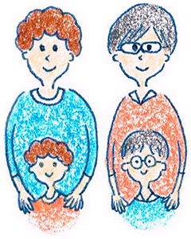

5 : コミュニケーション能力と遺伝の問題
・コミュニケーション能力は遺伝で決まる？
コミュニケーション能力は生物学的に遺伝によってある程度決まっていることがわかってきています。
詳しくは、おいおい解説したいと思いますが、遺伝によって決まっている・・・
ということは、何を意味するのでしょうか？

遺伝によって決まると言うことは明るい性格、暗い性格、よく話す、あまり話さないなどのコミュニケーションに関わることが先天的に決まっている部分があると言うことです。
身長に例えるとわかりやすいと思います。 私たちの身長は大体両親の身長と似てきますよね。 そしてどんなに努力をしても、身長を自分の努力でコントロールすることは難しかったりするでしょう。
せいぜい、牛乳をたくさん飲むとか、よく睡眠を取るぐらいしか努力のしようがないと思います。
・コミュニケーション能力は曖昧な世界だから悩む
体は目に見えるものですから、わりと諦めがつくものですが、コミュニケーション能力は「どこからが改善できて、どこからが改善できないのか？」 これはよくわかりません。だからこそ悩みは余計深くなってしまうのですね。
例えば、「どもり」については、基本的には治る方は少数ですし、いままでずっと暗かった方が、急に明るくなるなんてことは、ほとんどないと考えたほうがいいでしょう。
そういった変わらない部分については、受け入れることが大事になることは言うまでもないでしょう。 変わらない部分を受け入れない限り、ずっと苦しんでしまうことになりますから。
・変わるのか？変わらないかの見極めの部分が難しい
ただし、問題なのは、変化が可能なのか、可能ではないのかがわからない部分です。 この点については、努力すれば、なんとかなるのではないかという希望があり、その希望がある以上、コミュニケーション能力を伸ばすためのアプローチをしてみたいと感じるのが人間と言うものです。
例えば「歯を6本見せながら話す」という課題であればなんとかなりそうですよね。これぐらいの努力なら健康的でいいのではないかと思います。 実際にやってみて、周りから誉められて自信がついたということはよくあることです。
そしてなんでもかんでも受け入れてしまえ！
と考えてしまうのもやや極論過ぎて、人間的な成長がないですよね。 例えば、暗い性格なんだけど、暗い性格なりに、楽しいことを見つけて、いままでよりも少し楽しいことが見つかって、笑顔がいつもよりも少しだけ増える。 なんてことはやり方次第できるかもしれません。
・健康的な努力はしましょう！
そういった小さな努力によって、自分の選択肢の幅は段々と広がっていくものでもあると思います。 なので、やはり健康的にできる範囲では努力をしていくことがコミュニケーション能力を高める上で大切です。
結論として
コミュニケーション能力について考える上で大事なことは 「受け入れるのか？改善するのか？」 の2つの選択肢をORではなく、ANDで考えるということです。
受け入れる部分をいつも大事にしつつ、適度に自分を成長させる上で、努力をしていく。
という感覚でしょうか。
・バランスをもってコミュニケーション能力を伸ばす
全てを受け入れることは聖人でなければとても難しいでしょう。 かといって、全てを改善していくなど、自分を苦しめるだけです。 このバランスを大事にして、時期によってはゆっくり過ごす時期もあれば、時期によってはがっつり努力をする時期をつくっていいと思います。
次回は、コミュニケーション能力トレーニング基礎編の最終回です。コミュニケーション能力の改善がしやすい分野、難しい分野の目安について学んでいきましょう。
【今回のまとめ】
コミュニケーション能力は先天的に決まっている部分があります。健康的にできる範囲の努力で、コミュニケーション能力向上を目指していきましょう！
 |
|